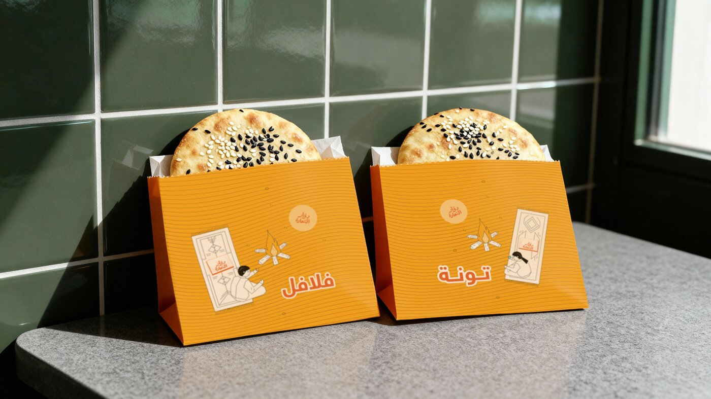
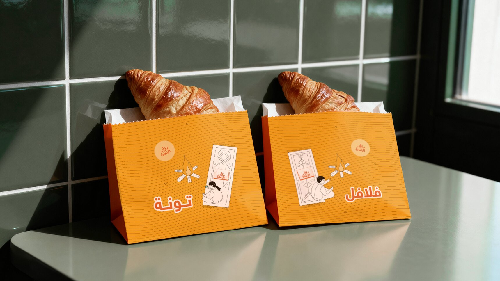
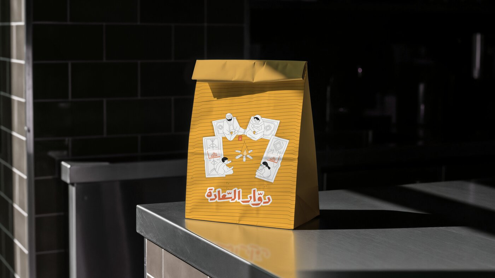
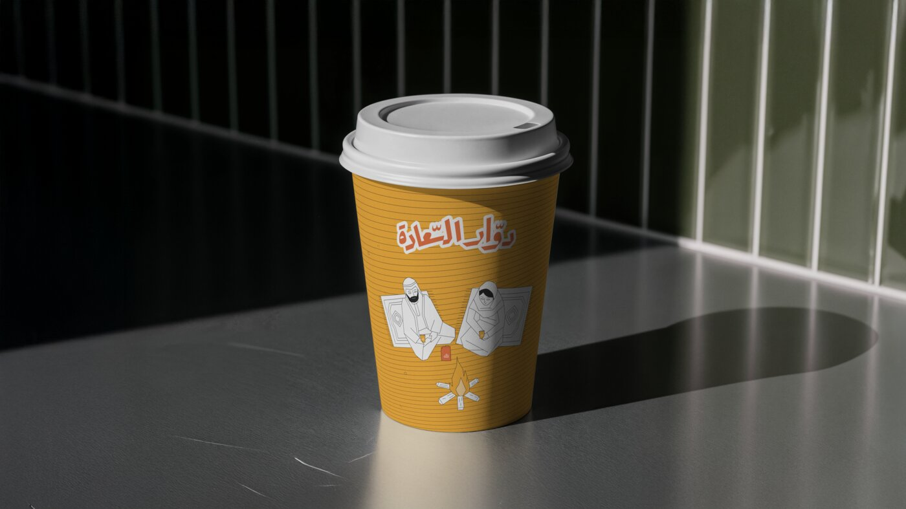
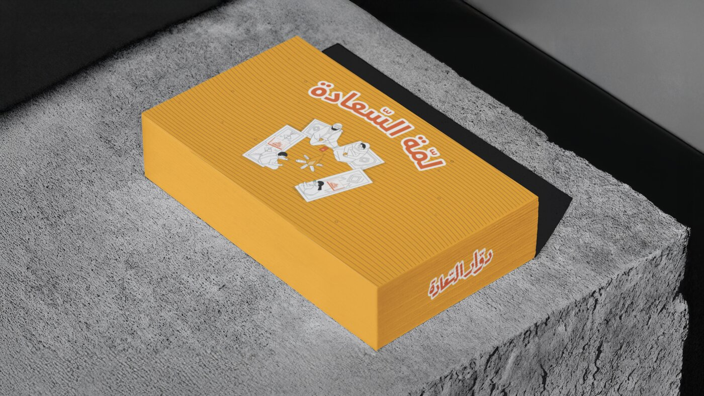
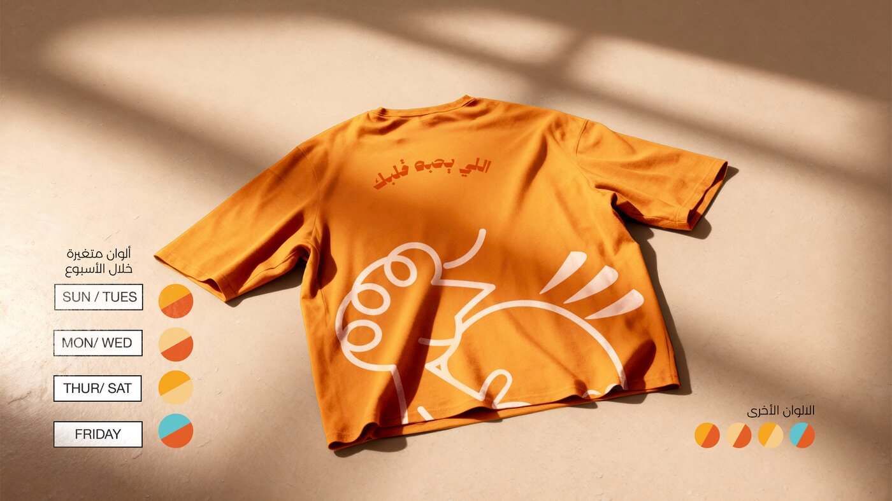
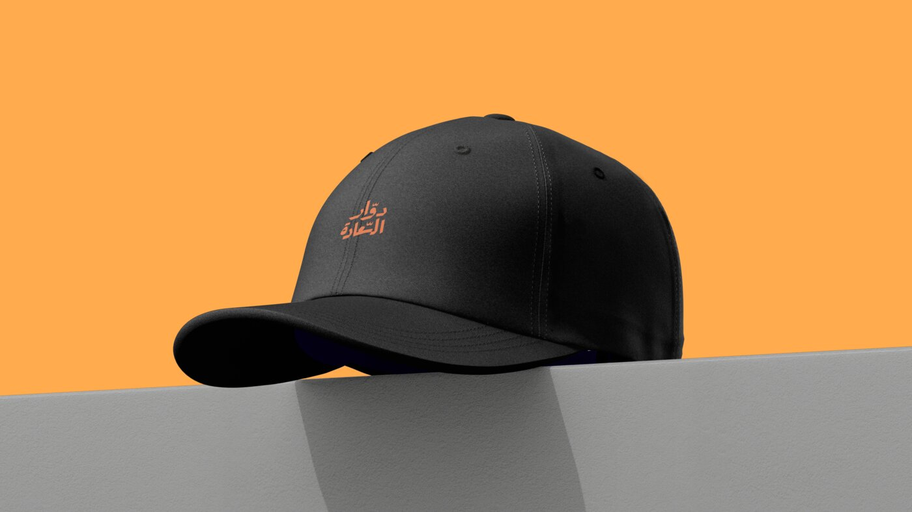

01
أكياس الساندويتش
كيس لكل صنف، واسم الصنف عليه بخط كبير — تعرف طلبك قبل ما تفتحه.

هوية شتوية دافئة بالبرتقالي — من كيس الساندويتش إلى تيشيرت الطاقم.

كيس لكل صنف، واسم الصنف عليه بخط كبير — تعرف طلبك قبل ما تفتحه.

كيس الطلبات الكبير بنفس الرسومات.

كوب المشروبات الحارة — أول طلب في الشتاء.

بوكس المشاركة للعائلة والأصحاب — اسمه يقول وش فيه.

تيشيرت الطاقم بأربع توليفات ألوان تتبدّل على أيام الأسبوع.

كاب أسود بشعار صغير يكمّل يونيفورم الطاقم.